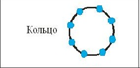

1.Топология 1
Лекция 2. Локальные вычислительные
сети
Содержание
2.1 Топологии вычислительной сети
2.1.1 Топология типа «звезда»
2.1.2 Кольцевая топология
2.1.3 Шинная топология.
2.3.4.Деревовидная топология
2 ЛОКАЛЬНЫЕ ВЫЧИСЛИТЕЛЬНЫЕ
СЕТИ
В общем случае под локальной вычислительной сетью (ЛВС) понимают такую сеть, в которой все оборудование узлов сети (рабочие станции и периферийные устройства), объединяемое физическими линиями, размещается в пределах небольшой территории, ограниченной одним или несколькими помещениями, на расстоянии не более чем 1 - 2 км друг от друга. Такая сеть является более специализированной по классу решаемых задач (банковская, государственного учреждения), однако часто требует обмена и протокольной совместимости с другими локальными или глобальными (корпоративными) сетями.
В ЛВС наиболее эффективное средство связи между системами, объединяемыми в сеть, - последовательный интерфейс. В последовательных интерфейсах в качестве передающей среды используются коаксиальные кабели, витые пары, волоконно-оптические кабели, которые обеспечивают высокую пропускную способность до 100 Мбит/сек и более. При использовании таких каналов связи строятся различные конфигурации вычислительных сетей (топологии ЛВС). Наиболее распространенные конфигурации - звездная, кольцевая, шинная и деревовидная.
2.1 ТОПОЛОГИИ ВЫЧИСЛИТЕЛЬНОЙ СЕТИ
2.1.1 Топология типа «звезда»
Концепция топологии сети в виде звезды пришла из области больших ЭВМ, в которой головная машина получает и обрабатывает все данные с периферийных устройств как активный узел обработки данных. Вся информация между двумя рабочими станциями проходит через центральный узел сети Сети с такой топологией строятся, как правило, на базе метода коммутации каналов. В этом случае перед началом передачи информации абонент-инициатор передачи (вызывающий узел) запрашивает у центрального узла установление физического или логического соединения с абонентом-партнером (вызываемом узлом). После установления соединения соответствующий физический или логический путь монопольно используется абонентами-партнерами для обмена информацией. По окончании обмена один из абонентов запрашивает у центрального узла разъединения.
Кабельное соединение довольно простое, так как каждая рабочая станция связана с узлом. Затраты на прокладку кабелей высокие, особенно когда центральный узел географически расположен не в центре топологии
При расширении вычислительной сети подобной топологии к новому рабочему месту необходимо прокладывать отдельный кабель из центра сети.
Производительность вычислительной сети в первую очередь зависит от производительности центрального файлового сервера, а пропускная способность сети определяется вычислительной мощностью узла и гарантируется для каждой рабочей станции. Коллизий (столкновений) в процессе передачи данных не возникает.
Топология в виде звезды является наиболее быстродействующей из всех топологий вычислительных сетей, поскольку передача данных между рабочими станциями проходит через центральный узел (при его хорошей производительности) по отдельным линиям, используемым только этими станциями.
Однако при данной топологии он может быть узким местом вычислительной сети. В случае выхода из строя центрального узла нарушается работа всей сети.
В настоящее время файловым серверам уделяется особое внимание с точки зрения надежности его работы, а так как для данной топологии характерна простота управления обменом информации и механизмом против несанкционированного доступа, топология типа «звезда» находит широкое распространение при проектировании ЛВС.
2.1.2Кольцевая топология
При кольцевой топологии сеть не имеет явно выраженного центрального узла (сервера), а рабочие станции связаны одна с другой по кругу ( см. рис. 4 ). Сообщения в подобной топологии циркулируют по кругу в строго заданном направлении. Рабочая станция посылает сообщение заданному адресату, предварительно получив из кольца запрос (маркер). Пересылка сообщений в подобной топологии является эффективной, так как большинство сообщений можно отправлять "в дорогу" по каналу связи одно за другим.

Каждая рабочая станция может выполнять функции сервера, а банки данных могут быть распределены между станциями.
Основная проблема при кольцевой топологии заключается в том, что каждая рабочая станция должна активно участвовать в пересылке информации, и в случае выхода из строя хотя бы одной из них вся сеть парализуется. Неисправности в кабельных соединениях локализуются легко. Подключение новой рабочей станции требует выключения сети, так как во время установки кольцо должно быть разомкнуто.
Специальной формой кольцевой топологии является логическая кольцевая сеть. Физически она монтируется как соединение звездных топологий. Отдельные звезды включаются с помощью специальных коммутаторов ( англ. Hub - концентратор).
В зависимости от числа рабочих станций и длины кабеля между рабочими станциями применяют активные или пассивные концентраторы ("хабы"). Активные концентраторы дополнительно содержат усилитель для подключения от 4 до 16 рабочих станций. Пассивный концентратор является исключительно разветвительным устройством (максимум на три рабочие станции). Каждой рабочей станции присваивается соответствующий ей адрес, по которому передается управление (от старшего к младшему и от самого младшего к самому старшему). Разрыв соединения происходит только для нижерасположенного (ближайшего) узла вычислительной сети, так что лишь в редких случаях может нарушаться работа всей сети.
2.1.3 Шинная топология
В сетях с шинной топологией все рабочие станции подключаются к одному каналу связи (коммуникационному пути) с помощью премопередатчиков.Рабочие станции могут непосредственно вступать в контакт с любой рабочей станцией, имеющейся в сети, и могут быть подключены или отключены без нарушения функционирования всей вычислительной сети. Канал оканчивается с двух сторон пассивными терминаторами, которые поглощают передаваемые сигналы, поскольку по своей природе передача в такой сети является широковещательной (длинные линии – из курса теоретические основы электротехники).
Каждая рабочая станция подключается к шине непосредственно к соединителям кабельных секций (тройниковые соединители) либо с помощью специальной врезки, которая просто прокалывает коаксиальный кабель до контакта с центральным проводником.
Поскольку один общий канал связи (шина) разделяется между всеми абонентами сети, такие сети называются также моноканальными.
Пропускная способность и задержка в шинных сетях определяется большим числом параметров: методом доступа, полосой пропускания канала связи, числом узлов связи, длиной сообщений и др.
В данной топологии банки данных, также как и в сетях с кольцевой топологией, могут распределяться между рабочими станциями (станции ресурсов).
2.1.4 Деревовидная топология
В локальной сети такого типа используется комбинация ранее рассмотренных типов топологий: “кольцо-звезда” либо “шина-звезда”.
Сервера подключены к шине сети через контроллер, а к каждому серверу подсоединены звездно рабочие станции. Сети такого типа применяются там, где невозможно непосредственное применение базовых сетевых структур в чистом виде.

Сети такой топологии обладают преимуществом каждой в отдельности типом сети («кольцо» и «звезда»). И дополнительно удобны при административном управлении сетью.
Недостаток такого типа в том, что выход из строя участка канала связи сети парализует работу группы абонентов этого участка.
Сравнительные характеристики различных топологий локальных сетей представлены в табл. 1.
Таблица 1
|
Характеристики |
Топология | |||
|
Звезда |
Кольцо |
шина |
дерево | |
|
Сложность интерфейса |
малая |
малая |
малая/ средняя |
средняя |
|
Наращиваемость |
малая |
средняя |
высокая |
высокая |
|
Надежность |
средне/ высокая |
высокая |
высокая |
высокая |
|
Стоимость подключения |
высокая |
средняя |
низкая |
низкая |
|
Работа в реальном времени |
очень хорошая |
хорошая |
плохая |
средняя |
|
Разводка кабеля |
хорошая |
удовлетворительная |
хорошая |
хорошая |